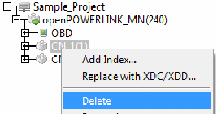
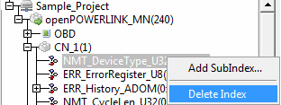

MN OBD can be deleted by right-clicking MN Node. A menu will appear as shown in Figure
Select ‘Delete OBD’ menu item, , a pop-up appears to ask whether the user wants to delete the node.

CN node can be deleted by right-clicking on the node, a menu will appear as shown in Figure

Select ‘Delete’ menu item , a pop-up appears to ask whether the user wants to delete the node.

To delete the Index of a particular Node, expand the node tree by clicking '+' sign before the node. Then right-click on the Index which has to be deleted, a menu will appear as shown in Figure

Select ‘Delete Index’. Index will be deleted.
Subndex of a particular Index of a node can be deleted by rightclicking on the Sub-Index. A menu will appear as shown in Figure

Select ‘Delete SubIndex. Sub-Index will be deleted.